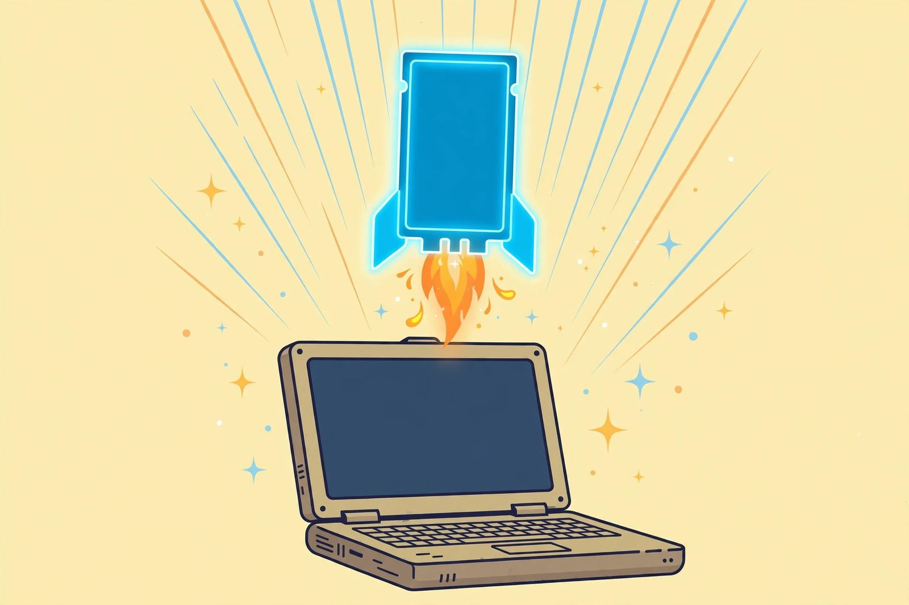

SSD upgrade walkthrough: the single biggest speed boost

If your old laptop takes minutes to boot and stutters opening a browser, the culprit is usually the hard drive. Most laptops from roughly the last fifteen years shipped with a mechanical spinning hard drive (HDD). Replacing it with a solid-state drive (SSD) removes the slowest part of the machine in one move. In most cases it is the single upgrade that makes an old laptop feel new again — often more noticeable than adding RAM or reinstalling the operating system.
An SSD has no moving parts. It reads and writes data far faster than a spinning disk, and it responds instantly instead of seeking a read head across a platter. That means the operating system boots faster, programs launch quicker, and the whole machine stops feeling like it's thinking before every click. The processor and memory in an old laptop are usually fine for everyday tasks — they were just waiting on a slow drive.
What to check before you buy anything
Most older laptops use a standard 2.5-inch SATA drive, and a standard 2.5-inch SATA SSD is a drop-in replacement: same size, same connector. That's the common, easy case. A few things to verify:
- Drive size and thickness. Confirm your laptop takes a 2.5-inch drive and note the thickness (7mm vs 9.5mm). Most modern SSDs are 7mm and fit both, but check anyway.
- How the drive is mounted. Some laptops have a dedicated hard-drive bay with a removable caddy; others bury the drive deeper. Look up your model's service manual online to see what's involved.
- How you'll move your system. You have two options: clone the old drive to the SSD (an exact copy, settings and files intact) or reinstall the operating system fresh on the SSD. Cloning needs a way to connect both drives at once — usually a USB-to-SATA adapter or enclosure. A fresh install needs bootable installation media and your product key or account credentials.
- Back up first. Before either path, copy anything you can't afford to lose to an external drive or cloud storage. Drive swaps are routine, but they're the wrong time to discover your backup is out of date.
Cloning vs. fresh install
Cloning is the path of least resistance: connect the new SSD via USB, run cloning software, and copy everything over sector by sector. When it's done, you swap the drives and boot up exactly where you left off. Downsides: the process can be slow, and if your old system was a cluttered mess, you're carrying the mess over. Make sure the data on the old drive fits on the new SSD before you start.
A fresh install takes longer but gives you a clean slate. Install the OS on the SSD from bootable media, then copy your files back from your backup and reinstall the programs you actually use. On a machine that's accumulated years of cruft, this often feels even faster than a clone.
The swap itself
The general procedure is the same across most laptops:
- Shut the laptop down completely — not sleep, a full shutdown — and unplug it.
- Remove the battery if it's removable. On laptops with internal batteries, some models have a battery-reset or disable option in the BIOS; check the manual.
- Ground yourself before touching internal parts. Touch a bare metal part of the chassis or use an anti-static wrist strap; static discharge can damage components.
- Open the drive bay cover (usually one or two screws on the bottom panel). Keep the screws organized — they are often different lengths.
- Slide out the old drive, remove it from its caddy or bracket, mount the SSD in the same caddy, and slide it back in. SSDs are light; make sure it's seated firmly so the connector makes good contact.
- Reassemble, then boot. If you cloned, it should start straight into your system. If you're doing a fresh install, boot from your installation media first.
Never force a connector. SATA connectors slide straight in with gentle pressure; if it isn't going, stop, check the alignment, and look again. Bent pins or cracked connectors turn a cheap upgrade into a repair bill.
After the swap
Once the SSD is in and the system is up, a few housekeeping steps pay off. Make sure the OS has recognized the drive as an SSD — modern operating systems handle this automatically and enable features like TRIM, which keeps the drive fast over time. Disable any scheduled disk defragmentation (it was meant for spinning disks and does nothing for an SSD), and consider reducing the number of startup programs while you're at it — boot speed plus fewer startup apps is a double win.
Keep the old hard drive for a while rather than wiping it immediately. It is a free full backup of your old system while you confirm everything works. Once you're confident, wipe it and use it as an external drive in a cheap USB enclosure — it makes a perfectly good backup or media-storage disk.
When an SSD won't help
An SSD fixes slow storage, not everything. If the laptop's problem is a failing battery, a cracked screen, a keyboard with dead keys, or a processor that genuinely can't keep up with modern web browsing, a new drive won't solve those. Also check the RAM: if the machine has very little memory, the system spends its time swapping to disk, and an SSD plus a memory bump together are the real answer (see our RAM guide). But for the classic complaint — "it takes forever to boot and open anything" — the SSD is almost always the fix that matters most.